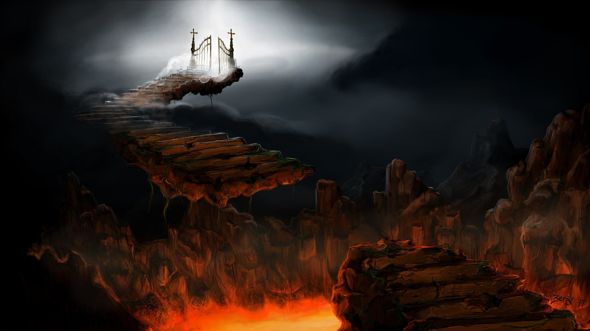
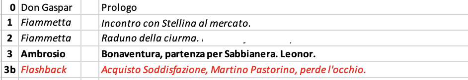

Struttura Narrativa
Scalettare al Contrario - Reverse Outlining
15 marzo 2022

Dove sono i miei esploramondi giardinieri? Quelli che 'ops, mi sono dimenticato di scalettare e nel frattempo ho scritto un libro'? Quelli che proprio non ne vogliono sapere della pianificazione.
Siete delle persone coraggiose, e c'è un metodo pensato apposta per voi!
Ed è grazie alla scaletta al contrario!
Non pianificare non è SEMPRE il male.
Credo che dipenda molto dalle motivazioni di base: se lo fai perché ritieni che la scrittura debba sorgere spontanea dal cuore e liberarsi sulle pagine come uno schizzo di v e r n i c e che trasuda dall'anima, che non può essere imbrigliata, che è libera da ogni regola e crudele costrizione... credo che questo blog non faccia proprio per te.
Se invece non pianifichi in modo doloso, ma sei consapevole della necessità di una struttura narrativa nel tuo progetto, la scaletta al contrario può senza dubbio venirti in aiuto!
 Cos'è una Scaletta al Contrario?
Cos'è una Scaletta al Contrario?
Una scaletta al contrario o reverse outline è una scaletta stilata dopo la prima stesura. Questo sistema viene prevalentemente usato in saggistica, ma è applicabile anche alla nostra narrativa.
Nonostante io sia una scalettatrice pianificastorie molto assidua, mi ritrovo quasi sempre a perfezionare la mia scaletta anche in fase di seconda stesura, quindi è una tecnica che consiglio anche a chi ha un approccio alla scrittura simile al mio.
Quali sono i suoi benefici?
La scaletta al contrario può aiutarti in molti modi.
- Allena la tua mente ad analizzare scena per scena
- Ti permette di identificare problemi strutturali e rendere più semplice la loro risoluzione
- Ti permette di armarti di un ottimo piano di revisione, se hai l'esperienza sufficiente per farlo
Come la possiamo stilare?
- Creiamo una lista con ogni capitolo e/o scena
- Identifichiamo gli avvenimenti principali di ogni capitolo. È utile tenerli come punto di riferimento per avere la misura della struttura a colpo d'occhio.
- Analizziamo la struttura e disponiamo indicativamente gli eventi principali all'interno di una struttura narrativa preformata, come il Viaggio dell'Eroe, la Struttura a Tre Atti, o i Battiti della Storia.

E poi? È il momento di sistemarla!
- Assicuriamoci che gli obiettivi del tuo personaggio in quella specifica scena siano chiari e logici.
- Che ogni azione sia giustificata e abbia senso ai fini della trama.
- Assicuriamoci che ogni scena contribuisca o alle trame e sottotrame, o al worldbuilding, o alla crescita del personaggio (possibilmente a tutti e tre allo stesso tempo).
- Assicuriamoci che gli elementi che fanno da planting per gli avvenimenti successivi sono ben inseriti.
- Valutiamo il ritmo o pacing della scena e confrontiamolo con i picchi caratteristici della struttura narrativa. C'è tensione verso il midpoint? Ci sono i cali di tensione durante la ricompensa o nell'All Is Lost?
- Annotiamo qualunque dettaglio dovrà rimanere coerente per il resto della storia.
- Assicuriamoci sempre che ogni scena sia vitale alla storia.
Ecco che abbiamo costruito una scaletta al contrario.
A questo punto, mi piace segnalare con evidenziature rosse gli elementi che voglio assolutamente cancellare dalla scaletta, e con evidenziature verdi quelli che devo aggiungere in fase di seconda stesura.
Note, evidenziatori e commenti sono i vostri amici.
Non abbiate paura a scalettare scene intere e completamente nuove, non abbiate paura a tagliare via interi capitoli.
Questo è il momento in cui potete lavorare sulla big picture senza fare grossi danni, ed è un tool potentissimo a vostra disposizione!